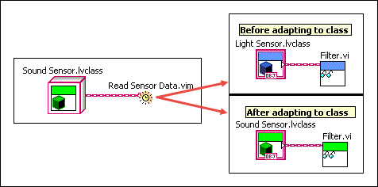

Open example�
Open example�
 Find related examples
Find related examplesMalleable VIs adapt to input classes. A malleable VI that calls a method of class A accepts data of unrelated classes as long as the unrelated class has a public method with the same name, connector pane pattern, and terminal direction as the method of class A. The malleable VI adapts to the input class by replacing the call to the method of class A with a call to the public method in the input class, if such a method exists.
Compared with dynamic dispatch VIs, malleable VIs are more flexible when adapting to input classes. A dynamic dispatch VI accepts only data of its own class or data of descendant classes. A malleable VI also accepts data of unrelated classes when possible.
The adaptability of a malleable VI defines an interface of method calls with method name, connector pane pattern, and terminal direction. The malleable VI accepts data of any class that fulfills the interface of method calls, which allows you to use one malleable VI to perform operations on data of unrelated classes or implement multiple interfaces defined by different malleable VIs on one class.
In the following figure, Read Sensor Data.vim calls the Filter.vi method of Light Sensor.lvclass, which has no common ancestor with Sound Sensor.lvclass. Read Sensor Data.vim adapts to Sound Sensor.lvclass, assuming that Sound Sensor.lvclass has a public method with the same name, connector pane pattern, and terminal direction as Filter.vi.

Refer to the labview\examples\Malleable VIs\Class Adaptation\Malleable VIs - Class Adaptation.lvproj for an example of using malleable VIs to define interfaces of method calls.
Open example�
Find related examples